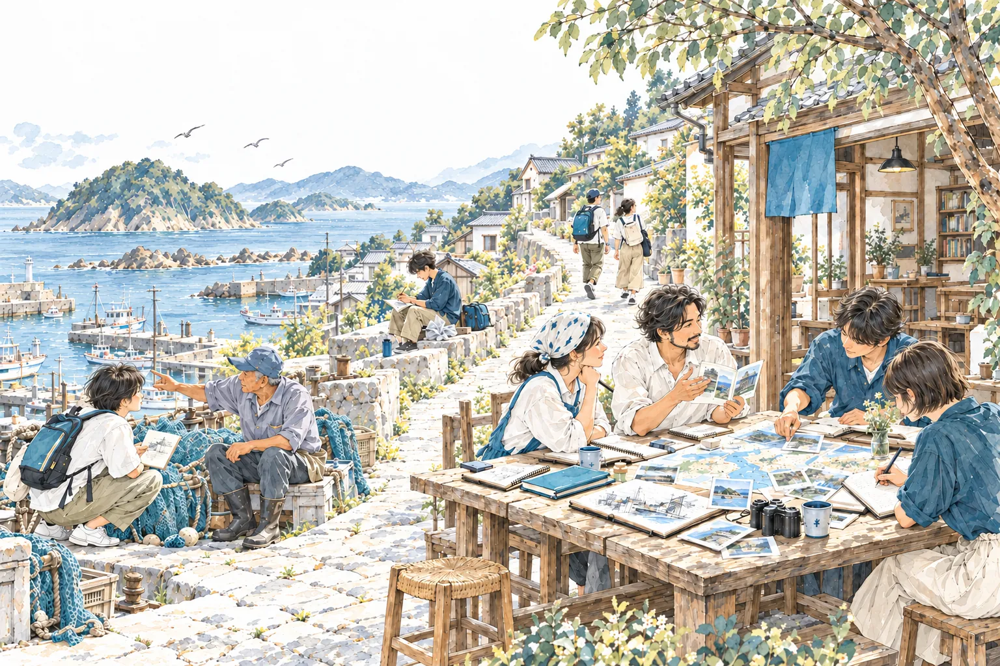
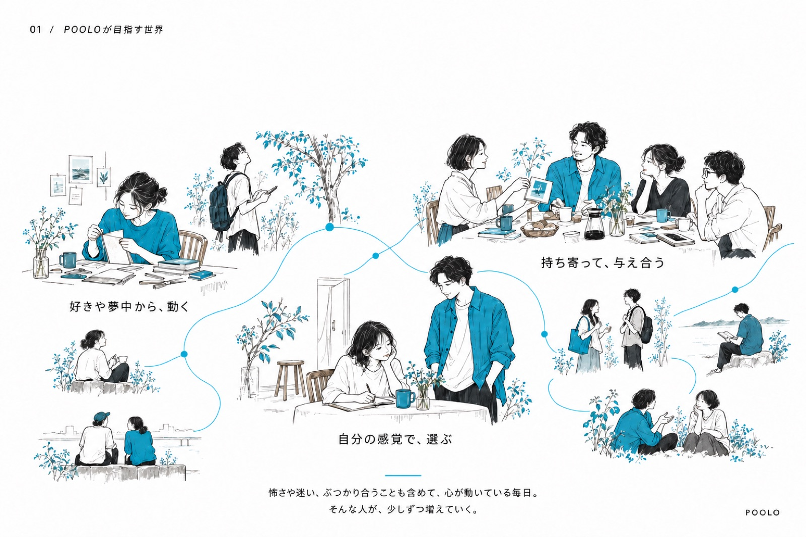
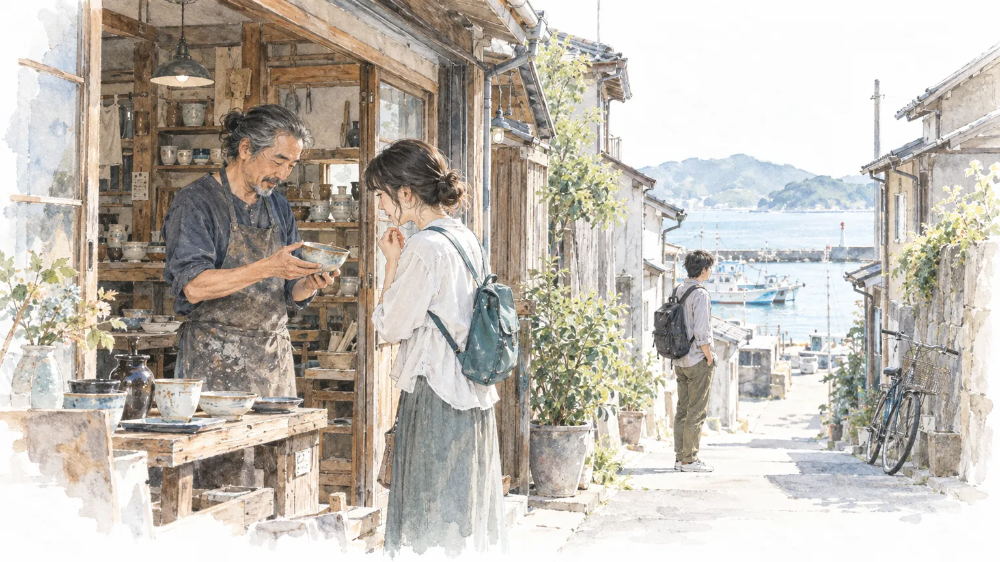
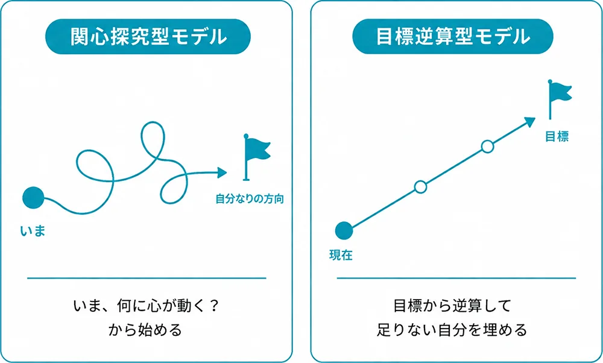
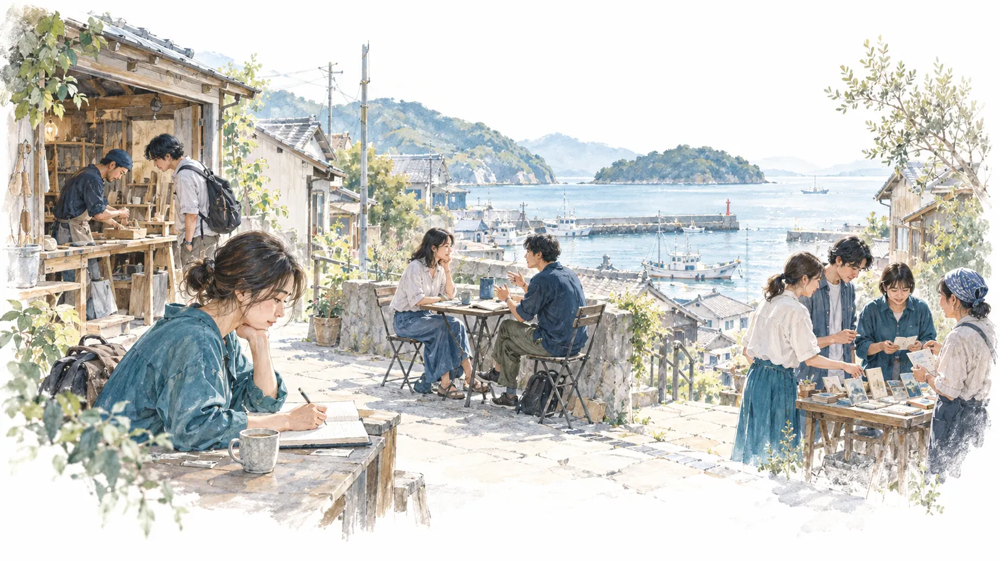
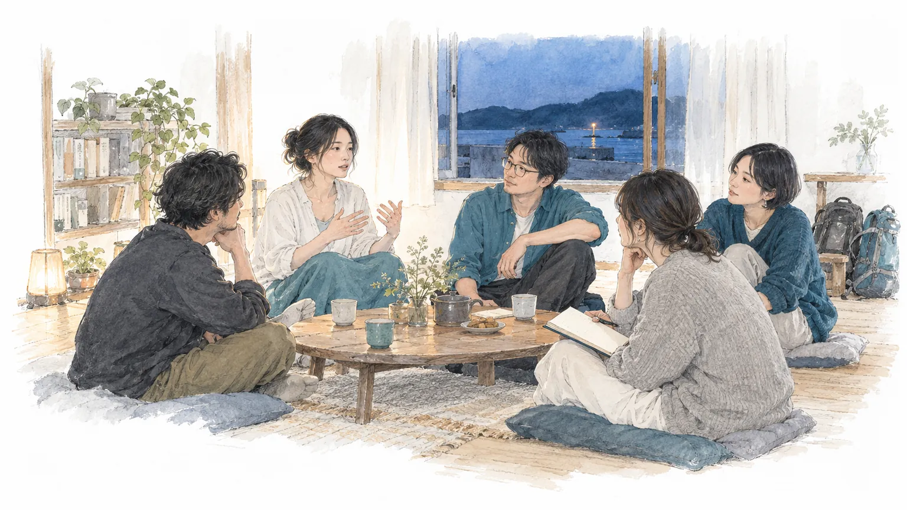

以前
入社4年目。仕事は回っていて、評価も悪くない。でも週末になると「このままでいいのか」と考えて、答えが出ないまま月曜を迎える。周りに話すと「贅沢な悩みだね」で終わるので、最近は誰にも話していない。
いま
「次の予定を考えない時間を、私は自分の暮らしの中で、人と一緒にどうつくれるのか」という自分の問いを持ち、平日の夜にその時間を自分でつくっている。同じように迷う人と過ごす小さな会も企画した。何を大事に生きるかを、自分の言葉で言える。
すぐには答えの出ない問いとともに、人生を旅するように面白がる
こんにちは！みっちーです。POOLOの考え方を、本のように頭から読めるようにまとめました。POOLOが目指すこと、始めた理由、旅をどう捉えているか、8ヶ月で何をして、何が起きるのかを、できる限りていねいに書いています。
今の時点で、80点くらいの出来です。読んでくれたみんなと一緒に、作っていきたいと思っています。感想や「ここが分からない（どういうこと？）」みたいな連絡、ウェルカムです！
最後に、時間を忘れて誰かと話したのはいつですか？
社会人になって、本気で語り合える仲間はいますか？
最後に「これは自分で決めた」と胸を張れる決断をしたのはいつですか？

POOLOは、を自分で立て、仲間と分かち合いながら、自分で決めて動いていく、あたらしいの学校です。
言葉、モデル、理論のくわしい説明は、巻末にまとめています。
POOLOが目指すのは、「な世の中」です。一人ひとりが自分の好きや夢中から動き、何を良いとするかを自分の感覚で選んで表現し、それを持ち寄って与え合う。正解はないので、基準はみんなでつくり直しながら前に進んでいく。旅する人も、その土地で暮らす人も、混ざり合って関わり合っている。そんな世の中です。
ここでいう「ご機嫌」は、いつも楽しいことではありません。怖さや衝突も含めて、心が動いている毎日のこと。そういう人が少しずつ増えていくことを、目指しています。

「このままでいいのか」と葛藤し、立ち止まっている人が、自分で決めて、して前向きに進めるようになる。
旅・・・の4つのステップを順に進めるのを1周として、8ヶ月で3回くり返す
行ったことのない場所に出かけ、合宿では同期と夜まで本音で話す機会
約2週間に1回。旅の経験が豊富な約20名の講師陣
同じ8ヶ月を一緒に進む、利害のない仲間
締め切りと相手のあるで、問いを形にする
問いがどう書き換わったかを、最初から順に書き残す
期を超えて続く通年コミュニティ（約70名）
POOLO学長／CODOLI代表
みっちー
感想が出てこない、と書く
自分の経歴にがっかりする。12月、スペインの巡礼路へ
TABIPPOの創業に加わる
旅大学を始める
POOLOを始める
CODOLIを立ち上げる
子どものころの僕は、心が動く子どもでした。ところが大学に入り、試合や受験のような外からのお題がなくなると、自分が何を感じているのかが分からなくなります。2008年、21歳でNPOのメーリングリストに書いたのは「感想も自分が本当にそう思っているのかも分かりません」という言葉でした。相手や仲間の意見は浮かぶのに、自分の感想だけが出てこない。より良さそうな選択肢があると、すぐに乗り換えてしまう。
社会人3年目の2013年には、世界一周中の人やお笑い事務所に通う人に出会い、自分の経歴が「誰かが通ってきた道」に見えてがっかりします。周りが良いとする道を、自分の感想を持たないまま進んできたことに気づきました。
その年の12月、世界一周の途中で、スペインの巡礼路を歩き始めます。セルビア出身の男性に「なぜ歩いているの？」と聞かれ、答えに詰まりました。雪山で足が痙攣した初日にはイギリス人の夫婦に助けられ、クリスマスに道に迷った日は見知らぬ人の車で送ってもらい、1ヶ月以上一緒に歩いた韓国人の友人と別れた日は、雨の中を泣きながら歩いた。歩く理由になる「かっこいい意味」は最後まで見つかりませんでしたが、日記は1万字を超えていました。
日記が1万字を超えるほど、心は動いていました。それまでは「自分がどう感じたか」を、自分に問うことがなかったのだと思います。
帰国後、僕は「旅で世界を、もっと素敵に。」を掲げるTABIPPOの創業に加わります。TABIPPOは、年間200回以上のイベントや、日本最大級の旅イベントBackpackFESTA（年間約4,500人）を通して、旅を広めてきました。
その場で一番多く聞くのは、「ひとりで考えていると分からなくなる」という声です。仕事も生活も回っているのに、このままでいいのかと立ち止まっている人が、たくさんいる。21歳の僕が抱えていた悩みと、同じ形をしていました。
イベントを続けるなかで感じてきたのは、コミュニティの力です。1回のイベントで心が動くことはあっても、人が変わっていくのは、長い時間をかけて、仲間とともに過ごすなかでのことが多い。そう感じています。
僕やTABIPPOが出会ってきた悩みは、多くの人が共通して抱えているもの。だから、その悩みに一緒に向き合える場を、自分たちでつくりたい。
詳しいことは、こちらのnoteに書いています。
夢中だったものから、少しずつ遠ざかっていった僕が、あたらしい旅の学校POOLOをやる理由
社会が人生の型を用意してくれた時代から、一人ひとりが自分で組み立てる時代へ。その変わり目にいる今、迷う人が増えている理由を、4つに分けて書きます。ここでは、それぞれを「見立て1〜4」と呼びます。
働き方、住む場所、家族の形。どれも前の世代より選べる幅が広がりました。一方で、低成長の時代に入り、決まった型をたどれば報われるとは言えなくなっています。
決める責任は一人ひとりに移りました。ところが、受験や就職で使ってきた基準は外から用意されたもので、自分がどう感じたかを聞かれないまま大人になる人が多いと見ています。21歳の僕も、同じでした。
「後悔しないキャリアの選び方」や、AIに聞けば返ってくる「向いている仕事」。答えっぽいものはいつでも届きます。けれど、自分が何に迷っているのかは、誰も教えてくれません。
地域・親戚・職場のつながりが薄れ、利害のない人と本音で話せる相手は、自分から会いにいかないとできなくなりました。SNSで人と比べるほど、迷いは口に出しにくくなります。
見立て2 日本は5か国で最も低い
こども家庭庁「我が国と諸外国のこどもと若者の意識に関する調査」令和5年度
見立て3 答えは、1年で3倍の人に届くようになった
総務省「情報通信白書」令和7年版
見立て4 約4割。20〜30代で高い
内閣府「孤独・孤立の実態把握に関する全国調査」令和6年。「それ以外」は、ほとんどない・決してない・無回答の合計
見立て4 海外に行く人は、20年前より少ない
外務省「旅券統計」をもとにした日本旅行業協会の集計
見立て4 どちらも、世界の平均を大きく下回る
Gallup「State of the Global Workplace」2026年版／パーソル総合研究所「グローバル就業実態・成長意識調査」2022年
見立て4 およそ4割
総務省統計局「令和2年国勢調査」
旅を広める会社として、TABIPPOはずっと同じ光景を見てきました。旅をしているとき、人は前向きになり、生き生きとしています。日常では迷っていた人が、旅先では自分で決め、知らない人と本音で話し、心が動いたことを誰かに話したくなっています。巡礼路の僕も、そうでした。
| 日常では | 旅先では | 巡礼路では |
|---|---|---|
| 選択肢は、情報として知っているだけ | 身体で触れる 知らない生き方や暮らしに、身体ごと入る | 800kmを自分の足で歩いた |
| 外の基準で決めている | 自分で決めるしかない アウェイでは、評価や相場や「こうすべき」が通じない | 道に迷い、どうするかをその場で決めた |
| 答えっぽいものに振り回されている | 問いが生まれる 心が動いた経験が、自分の問いの元になる | 「なぜ歩いているの？」に詰まり、日記が1万字になった |
| ひとりで抱えている | 心が動いた経験を分かち合える 旅先で出会った人に心が動いたことを話し、相手の経験も聞ける | 助けてくれた夫婦、車で送ってくれた人、一緒に歩いた友人 |
旅を入口にした問いかけで、心が動き、言葉が変わることは、12期の体験会と講義で実際に起きています。
12期の体験会のワークシートと、講義後のリフレクションから（実測）。人数が少ないので、傾向として読んでください。
旅をすると、この4つのことが一度に起きます。ただ、旅から帰ると、1〜2ヶ月で元の毎日に戻る人がほとんどです。POOLOは、旅で心が動いたことを、自問・対話・共創へとつなげ、帰ってきた毎日でも続くようにしています。
ここからは、POOLOでいう旅の範囲、旅で身につくこと、旅の見方の順に書きます。旅は4つのステップの最初に来て、自問・対話・共創は、どれも旅で心が動いたことから始まります。
POOLOでいう旅は、いつもの暮らしの外に自分で決めて出かけ、いつもの当たり前が通じない場所で、心が動く経験をすることです。遠くへ行くことや、泊まりがけであることは条件にしません。
次の3つがそろっていれば、近所の行ったことのない店に入ることも、誰かの仕事を半日手伝うことも、POOLOでは旅に入ります。反対に、遠くへ出かけても、決められた予定をこなすだけなら、3つはそろいにくくなります。
こうした旅を重ねるうちに、3つの構えが身についていきます。
遠い土地や人、出来事も、身体で触れると、他人事から自分の話になります。旅では、心が動いたことを自分のこととして残します。
日常では人や状況に任せていることも、旅では行き先やルート、会う人を自分で決めるしかありません。
計画どおりにいかない、言葉が通じない、知らない価値観に出会う。旅で起きる予定外のことを受け入れて、問いのきっかけとして面白がります。
POOLOでは、この3つをと呼んでいます。旅でいちばん身につきやすく、自問・対話・共創でも使います。ステップごとの使い方は、付録Aの旅的スタンスにまとめています。
観光社会学者のエリック・コーエンは、人が旅に求めるものを5つのモードに分けました（1979年）。POOLOでは、旅から帰ったら「今回はどのモードだったか」を選びます。問いが書き換わる旅は、体験モードや実存モードに近づきます。
| モード | どんな旅か |
|---|---|
| 娯楽モード | 楽しんで元気になり、いつもの毎日に戻る旅 |
| 気晴らしモード | いつもの毎日の退屈から、いっとき離れる旅 |
| 体験モード | 旅先の人の暮らしにふれて、その本物らしさを味わう旅 |
| 実験モード | いろいろな暮らし方を試して、自分に合うものを探す旅 |
| 実存モード | 旅先に、自分が大事にしたいことの中心を見つける旅 |
同じ行き先でも、旅先の人や場所とどう関わったかで、モードは変わります。

とは、心が動く問いを自分で立て、仲間と分かち合いながら、
自分で決めて動きつづけること。
POOLOの探究は、「」という進み方をとります。関心探究型とは、今、何に心が動くかを出発点にして、試す、相手の反応を受け取る、また試す、をくり返していく進み方のこと。試すたびに、自分では思いつかなかった経験を人から聞き、それをもとに問いを書き換えます。先にゴールを決めて逆算する進み方（目標逆算型）と比べると、次のようになります。

| 観点 | 目標逆算型 | 関心探究型（POOLO） |
|---|---|---|
| 出発点 | 3年後、どうなりたいか | 今、何に心が動くか |
| 進め方 | ゴールを決めて、逆算して計画を立てる | 試す→相手の反応を受け取る→また試す |
| 答えが見えてくるところ | 自分の中を探して見つける | 自分と相手のあいだで見えてくる |
| 行き着く先 | はじめに思い描いた自分 | 入学時には想像していなかった自分 |
目標逆算型と関心探究型の対比は、安斎勇樹さん（MIMIGURI代表取締役Co-CEO）の考えをもとに、POOLOで整理したものです。
旅から反時計回りに4つのステップを順に進むのを1周として、8ヶ月で3周します。左の列（ひとり）で納得が、右の列（他者）でつながりが育ちます。

ここでは、旅・自問・対話・共創という4つの言葉を定義します。どれもふだん使う言葉なので、聞いた人によって思い浮かべるものが違うからです。定義には、全体図の2つの軸と、それぞれのステップで手元に残るものを使います。
旅と共創は、その場に出かけて足や手を動かす、身体のステップ。自問と対話は、書くことと話すことで進める、言葉のステップです。
旅と自問は、自分の心がどう動いたかを自分で確かめる、ひとりのステップ。対話と共創は、相手の反応を受け取って問いを書き換える、他者のステップです。
旅をひとりのステップにしているのは、旅でまず見るのが、出会った人の考えより自分の心の動きだからです。
| ステップ | ひとことで | 具体的には | 手元に残るもの |
|---|---|---|---|
| 1 旅身体×ひとり | いつもの暮らしの外に自分で決めて出かけ、いつもの当たり前が通じない場所で、心が動く経験をすること。 | 行き先と時間を自分で決めて出かけ、心が動いたことをその日のうちに書き残す。 | 心が動いたことのメモ（旅カード） |
| 2 自問言葉×ひとり | 心が動いた経験を自分に問いかけ、答えを出さないまま、仮の問いとして言葉にすること。 | 残したメモを1〜2週間おいて読み返し、何度も戻ってくることを「なぜ私は、［いつ・どこで・誰といたとき］に、［どう反応する］のか」の形に書く。 | 仮の問い（v1.0のように、日付をつけて残す） |
| 3 対話言葉×他者 | 仮の問いを人に話し、相手ならどんなときにそう感じるかを聞いて、問いを書き換えること。 | 考えの違う人に、問いとそう思ったきっかけを話し、「あなたなら、どんなときにそう感じる？」と聞いて、返ってきた一言で問いを書き換える。 | 書き換えた問いと、誰のどの一言で変わったかの記録 |
| 4 共創身体×他者 | 問いを持って人と一緒にやってみて、分かったことをその人と分かち合うこと。 | 誰かと一緒に小さく試し、分かったことをその人と分かち合って、返ってきた一言で問いを書き換える。 | 分かち合ったこと、返ってきた一言、次の旅で確かめたい問い |
解釈が分かれやすいところを、具体例で分けました。迷ったときは、上の定義に当てはまるかと、手元に残るものがあるかで判断します。
| ステップ | 入るもの | 入らないもの |
|---|---|---|
| 旅 | 近所の行ったことのない店に入る／誰かの仕事を半日手伝う／ひとりで1泊する | 決められた予定をこなすだけの旅行 |
| 自問 | 1行だけのメモ／うまく言えないまま残した言葉／仮のままの問い | 強みや目標を整理して書く自己分析／人に見せるために文章を整えること |
| 対話 | 同期に問いを話し、相手ならどんなときにそう感じるかを聞く／旅先で知らない人に問いを話す | 正解やアドバイスをもらう相談／共感し合って終わる会話／AIと話して終えること |
| 共創 | 気になる人に30分話を聞きに行く／誰かの暮らしや仕事を手伝う／チームで小さな企画をやる | 人のいない場でひとりで試すこと（旅か自問に入る）／完成させることだけが目的の大きな企画 |
各ステップの型（進め方・道具・できたの目安・周ごとの深まり）は、付録Aにまとめています。
4章で見たように、旅をすると4つのことが一度に起きますが、旅だけでは元の毎日に戻りやすくなります。4つのステップは、旅を入口にして、自問・対話・共創で続けていくための順番です。この並べ方でよいと考えている理由を、学びの研究から3つ挙げます。そのあとに現場で見てきたことを書いておきます。
経験学習のサイクルを整理したコルブは、経験する、振り返る、考えをつくる、試す、の4つの段階をすべて通ったときに学びが深まると考えました（1984年）。POOLOの4つのステップも、1つ飛ばすと次の周に持っていくものがなくなります。
哲学者のポランニーは、人は言葉にできるより多くのことを知っていると書きました（1966年）。野中郁次郎さんと竹内弘高さんのSECIモデル（1995年）は、身体で知っていることと言葉にしたことを行き来するなかで、新しい知識が生まれると整理しています。POOLOでは、旅で身体に入ったものを自問で言葉にし、共創でもう一度身体で試します。
デューイは、経験を人に伝えると、伝える側の経験も変わると書きました（1916年、くわしくは7章）。コルブのサイクルはひとりでも回せる形ですが、POOLOは4つのうち対話と共創の2つを、必ず他者と一緒にやるステップにしています。ひとりのステップで納得が、他者のステップでつながりが育ち、その2つがになります。
| 止まるところ | 起きること |
|---|---|
| 旅で止まる | 心は動いても、言葉にしないまま、1〜2ヶ月で元の毎日に戻る |
| 自問で止まる | 自分の頭の中で、同じ問いを回しつづける |
| 対話で止まる | 話して共感し合うが、行動は変わらない |
| 共創だけをする | 動いてはいるが、何を確かめたかったのかが残らず、問いが書き換わらない |
コルブの考えをもとに、POOLOで整理したものです。
4つのステップを通ると、2つの実感を持てるようになります。納得は自分で決めたという実感、つながりは誰かと分かち合えたという実感です。自分で決めたことを、誰かと分かち合えたという実感を、POOLOでは豊かさと呼んでいます。納得とつながりが両方育ったときに、豊かさはいちばん大きくなります。だから掛け算で考えます。
以前
入社4年目。仕事は回っていて、評価も悪くない。でも週末になると「このままでいいのか」と考えて、答えが出ないまま月曜を迎える。周りに話すと「贅沢な悩みだね」で終わるので、最近は誰にも話していない。
いま
「次の予定を考えない時間を、私は自分の暮らしの中で、人と一緒にどうつくれるのか」という自分の問いを持ち、平日の夜にその時間を自分でつくっている。同じように迷う人と過ごす小さな会も企画した。何を大事に生きるかを、自分の言葉で言える。
旅合宿の夜、同期と話し込んで、気づいたら日付が変わっていた。旅カードには「時間を忘れた」と1行だけ残した。
自問2週間後に3行ログを読み返すと、印がついていたのは「時間を忘れた」ときのことばかりだった。
対話同期に問いを話して「あなたなら、どんなときにそう感じる？」と聞くと、「私は、締め切りのない日だけ本音が出る」と返ってきた。
共創同期3人で「予定を入れない半日」を企画して試した。撮った写真と感想を3人で分かち合うと、ひとりが「久しぶりに時計を見なかった」と言った。
次の旅で確かめたいこと：ひとりで知らない場所にいても、同じことが起きるのか
旅それを確かめるために、高知へひとりで1泊した。雨で予定が飛んだ日、食堂で漁師と2時間話した。
自問旅カードを読み返すと、いちばん反応していたのは雨の日の食堂だった。
対話宿のおかみさんに問いを話すと、「あんた、あの日だけ時計を見なかったね」と言われた。問いの前提が、締め切りから次の予定に変わった。
共創翌朝、問いを持って宿の朝の支度を半日手伝った。手伝いながら気づいたことをおかみさんと話すと、「ここの人は、朝だけは急がんよ」と返ってきた。
次の旅で確かめたいこと：旅先でなくても、平日の暮らしの中で同じ時間はつくれるのか
旅平日の夜、1周目の同期を誘って、近所の行ったことのない銭湯へ行った。スマホを置いて出たら、帰り道で2時間話していた。
自問v2.1と並べて読み返し、旅先の問いを平日の暮らしの問いに書き換えた。
対話1周目に話した同期に、もう一度問いを話した。返ってきたのは「私にとっては、子どもが寝たあとの台所がそれ」。旅をしない人の暮らしが、問いに加わった。
共創卒業制作として「予定を入れない夜の会」を企画した。来た人とその夜の記録を分かち合うと、「次は自分の家でやってみる」と返ってきた。
Aさんは説明のための人物です。でも、これまでの卒業生には、実際にこんな変化が起きています。
POOLO卒業生の実例です。
TABIPPO.NETの卒業生取材から6人を選びました。入学前の迷い、転機になった場面、いまの毎日を、4つのステップと重ねて読めます。
POOLO LIFE 10期 医師
ずみさん
「自分の心に素直になっていい」
TABIPPO.NETで記事を読むPOOLO LIFE 10期 中高一貫校の教員
さらさん
「無理に飾らなくていい。」
TABIPPO.NETで記事を読むPOOLO LIFE 10期 採用ブランディングのディレクター
さくぽん
「語り継がれる物語を増やす」
TABIPPO.NETで記事を読むPOOLO LIFE 10期 38歳 会社経営
よしよしさん
「下手くそに対話しましょう」（講義で出会った永井玲衣さんの言葉）
TABIPPO.NETで記事を読むPOOLO LIFE 10期 元・大手広告代理店（現在はTABIPPO社員）
かなさん
「悩むことも人生」
TABIPPO.NETで記事を読むPOOLO LIFE 9期 30歳 フリースクール・通信制高校の先生
ひーちゃん
「自分自身の直感を信じてほしい」
TABIPPO.NETで記事を読むTABIPPO.NETの卒業生取材（2026年公開）を要約したもの。言葉は記事中の本人の発言から1つずつ選んでいます（よしよしさんのみ、講義で出会った言葉）。
インタビューで聞くこと

旅から帰ってしばらくすると元の毎日に戻ってしまったり、講座で決めた新しい習慣が1〜2ヶ月で途切れたりするのは、多くの人が経験することです。哲学者のジョン・デューイは『Human Nature and Conduct（人間性と行為）』（1922年）で、習慣を呼吸にたとえました。呼吸が肺と空気の両方で成り立つように、習慣も本人だけでは成り立たず、まわりの人、過ごす場所、毎日の流れと一緒に成り立っている、という考えです。
旅から帰ってくると、職場の人間関係、いつもの通勤、週末の過ごし方が待っています。同じ顔ぶれと同じ予定のなかでは、前と同じ受け答えや過ごし方をするほうが楽です。まわりの人もそれを前提に動くので、旅先で生まれた考えや行動より、前の習慣が続きます。デューイは、習慣を直接変えようとするのは魔法を信じるのと同じだと書き、毎日の条件のほうを変えることをすすめました。
デューイ『Human Nature and Conduct』（1922年）の習慣の考え方をもとにした図です。
POOLOが変えるのも、この条件です。8ヶ月のあいだ、帰ってきた毎日に、同期、運営チーム、旅と講義の予定の3つが加わります。新しい考えや行動を、一緒に続ける相手と機会です。
経験からの学び方は、デイヴィッド・コルブが、デューイやレヴィン、ピアジェの考えをもとに、経験学習のサイクルとして整理しています（『Experiential Learning』1984年）。経験する、振り返る、考えをつくる、試す、の4つの段階を順に通り、試したことが次の経験になる流れです。コルブは、4つの段階をすべて通ったときに学びが深まると考えました。
コルブは、人によって得意な段階と苦手な段階があるとも述べています。POOLOでは、ひとりで取り組むと苦手な段階を飛ばしやすく、サイクルが途中で止まってしまうと見ています。同期は、本人が飛ばしがちな段階を一緒に通る相手で、振り返りを聞いて問いを返したり、試したかを一緒に確かめたりします。次の一歩を決めるのは本人です。
コルブ（1984年）の4段階との対応は、POOLOによる整理です。対話はコルブのサイクルにはない段階なので、図では学び手が考えをまとめる段階（抽象的概念化）の位置に置きました。
対話は、コルブのサイクルにはない段階です。POOLOが自問のあとに対話を置き、対話と共創で必ず他者を通すことは、デューイの考えで説明できます。デューイは『Democracy and Education（民主主義と教育）』（1916年）の第1章で、経験を人に伝えると、受け取る側だけでなく伝える側の経験も変わると書きました。経験を伝えるには、まずそれを相手に分かる形にしなければなりません。そのためにはいったん自分の経験の外に出て、相手から見たらどう見えるか、相手の暮らしとどこが重なるかを考えることになる、という指摘です。自問でつくった問いも、人に話そうとした時点で書き換えが始まります。
デューイは『Experience and Education（経験と教育）』（1938年）の第3章で、前の経験がその人を変え、次の経験の質も変えるという、経験の連続性を説きました。『Democracy and Education』の第7章では、関心を分かち合う人の範囲が広がり、違う集団どうしが行き来するほど、受け取るものが多様になり、考えるきっかけが増えると書いています。POOLOが2周目に問いを同期の外の人へも話し、3周目に次の人へ手渡すのは、関心を分かち合う人の範囲を広げるためです。3周目には、最初の問いと書き換えの記録を並べて読み、問いがどう変わったかを確かめます。
「わたしは、○○を問います」と言葉にし、探究ノートに書き換えを残します。次の周の旅や対話は、前の周の記録から始めます。
旅・自問・対話・共創を、8ヶ月で3回くり返します。周を重ねるごとに、話す相手と試す場所を広げていきます。
同期とは、講義や合宿で顔を合わせ、期のSlackでもつながっています。参加者がひとりだと飛ばしがちな振り返りや試す段階を、一緒に通る相手です。
新しい行動が自動的に続くようになるまでの日数は、中央値66日、人によって18〜254日（Lallyほか、2010年、ロンドン大学の研究）。POOLOの8ヶ月は、その幅をほぼ覆う長さです。
考え方を示すための概念図で、測った値ではありません。
習慣になるまでに数ヶ月かかる人もいるので、POOLOは8ヶ月をかけます。同期と3周するうちに、心が動く問いを自分で立て、仲間と分かち合いながら、自分で決めて動くことが、帰ってきた毎日のなかでも続くようになると考えています。
講義は約2週間に1回。
ロードマップの中で、参加した人がみんな経験する4つの場面です。
1ヶ月目
キックオフ画面越しに、初めて同期と顔を合わせます。50人それぞれが、「このままでいいのか」を抱えて入学しています。
2ヶ月目
問いを言葉にする日「わたしは、○○を問います」。自分の問いを、初めて口に出して言葉にします。
2周目
知らない人に話した日旅先で、知らない人に問いを話します。返ってきた一言で、問いの前提が変わることもあります。
8ヶ月目
最終発表最初の問いから今の問いまでを並べ、誰のどの一言で問いが変わったかを話します。
同じ8ヶ月を進む同期は、利害がなく、本音で話せる相手です。家でも職場でもない、もうひとつの居場所。1周目は同期に問いを話すところから始まり、2周目からは同期と一緒に外へ出ていきます。ひとりでは途中でやめてしまうことも、仲間が続けていると続けられます。6章のAさんの問いも、最初に書き換えたのは同期の一言でした。
8ヶ月のあいだ、コミュニティマネージャー（コミュマネ）と運営チームが伴走します。期のSlackで声をかけ、講義や合宿を進行するのが、主な役目です。問いを立てて、次の一歩を決めるのは本人です。
POOLOの講義には、旅の経験が豊富で、各分野の第一線にいる講師が立ちます。4つのステップと豊かさのテーマに沿って、講師を並べました。
髙井典子神奈川大学国際日本学部教授／観光研究
新井邦弘地球の歩き方代表取締役社長
東出昌大俳優
八木仁平自己理解メソッド開発者
三宅香帆文芸評論家
最所あさみ文化編集者
永井玲衣作家／哲学対話
安斎勇樹MIMIGURI代表取締役Co-CEO
千葉佳織カエカ代表
山口絵理子マザーハウス代表取締役
徳谷柿次郎Huuuu代表
遠山正道スマイルズ代表
前野隆司武蔵野大学ウェルビーイング学部長
山口周独立研究者
四角大輔作家
12期の講師と、これまでの登壇ゲストを、テーマの近さで並べました。TABIPPO代表の清水直哉さんも、11期・12期に登壇しています。
最後に、問いを持ちつづけることについて書きます。選べることが増え、AIに聞けば答えっぽいものがすぐ返ってくる今、何を大事に選び、誰と分かち合いたいのかは、自分で問いつづけるしかありません。
POOLOの8ヶ月で、問いは仲間とのあいだで何度も書き換わります。最初の問いに、卒業までに答えが出るとは限りません。それでも、心が動いた経験から問いを立て、人に話し、一緒に試すことを続けていれば、そのたびに自分で決めて進めます。卒業後も、問いは続いていきます。
POOLOは、正解のない時代に、自分の問いを持ちつづけ、仲間と一緒に豊かさを育てていく場所です。
体験会や個別相談会で、よく聞かれることに答えます。
忙しくて、旅に行く時間がありません
遠くへ行かなくて大丈夫です。行ったことのない場所に半日出かけるところから始められます。
人に話すのが苦手です
話す相手は、同期から少しずつ広げていきます。問いは仮のままでいいので、うまく話せなくても大丈夫です。
やりたいことが、まったく分かりません
だからこそ来てほしいと思っています。POOLOでは、今、何に心が動くかから始めるので、最初の問いは「なぜか覚えていること」から立てれば大丈夫です。その問いを人に話したり試したりしながら、やりたいことを少しずつ言葉にしていきます。21歳の僕も、感想が出てこないところから始まりました。
8ヶ月も続けられるか不安です
1〜2ヶ月で元に戻りそうになるのは、誰にでも起きることです。だから、同じ8ヶ月を走る同期と、伴走する運営チームがいます。ひとりで続ける前提ではありません。
旅慣れていなくても大丈夫ですか
旅の上手さは関係ありません。大事なのは、いつもの外に出て、心が動いたことを残すこと。旅慣れていない人ほど、心が動く場面に出会いやすいと思っています。
キャリアコーチングとは何が違いますか
コーチングは、答えに向かって一緒に整理する場です。POOLOは、自分の問いを持ち、仲間とのあいだで書き換えていく場。納得だけでなく、つながりも同時に育ちます。
この本でモデルと呼んでいるのは、POOLOの考え方を図や型の形にしたものです。
| モデル | 一言でいうと | 定義 | そう考える理由 | 使い方 |
|---|---|---|---|---|
| 探究 | 心が動く問いを自分で立て、仲間と分かち合いながら、自分で決めて動きつづけること | 5章 | 7章 | 付録A |
| 関心探究型 | 今、何に心が動くかを出発点にして、試しながら問いを書き換える進み方 | 5章 | 5章安斎勇樹さんの考え | 6章のAさん |
| 4つのステップ旅・自問・対話・共創 | 身体と言葉、ひとりと他者でできた4つのマスを、旅から順に進む | 5章 | 5章コルブ、ポランニー、SECIモデル、デューイ | 付録A |
| 豊かさ＝納得×つながり | 自分で決めたという実感と、誰かと分かち合えたという実感の掛け算 | 6章 | 5章 | — |
| 習慣を続ける3つの仕組み | 問いを言葉にして記録、8ヶ月で3周、同期と運営チーム | 7章 | 7章デューイ、コルブ | 7章のロードマップ |
| 旅的スタンス3つの構え | 自分ごと化する、自分で決める、面白がる | 付録A | — | 付録A |
ほかのメソッドとの違いは付録Bにあります。
この本で決まった意味で使っている言葉です。
| 言葉 | 定義 | くわしく |
|---|---|---|
| ご機嫌 | 怖さや衝突も含めて、心が動いている毎日のこと | 1章 |
| 探究 | 心が動く問いを自分で立て、仲間と分かち合いながら、自分で決めて動きつづけること | 5章 |
| 関心探究型 | 今、何に心が動くかを出発点にして、試す、相手の反応を受け取る、また試す、をくり返していく進み方 | 5章 |
| 旅 | いつもの暮らしの外に自分で決めて出かけ、いつもの当たり前が通じない場所で、心が動く経験をすること | 4章、5章 |
| 自問 | 心が動いた経験を自分に問いかけ、答えを出さないまま、仮の問いとして言葉にすること | 5章 |
| 対話 | 仮の問いを人に話し、相手ならどんなときにそう感じるかを聞いて、問いを書き換えること | 5章 |
| 共創 | 問いを持って人と一緒にやってみて、分かったことをその人と分かち合うこと | 5章 |
| 心が動く | うれしかった、引っかかった、なぜか覚えている、のどれかが起きること | 5章 |
| 場面 | いつ・どこで・誰といたときか | 5章 |
| 問い | 「なぜ私は、［いつ・どこで・誰といたとき］に、［どう反応する］のか」の形をした、一言では答えが出ない文 | 5章 |
| 書き換える | 問いの言葉が1語以上変わること | 5章 |
| 納得 | 自分で決めたという実感 | 6章 |
| つながり | 誰かと分かち合えたという実感 | 6章 |
| 豊かさ | 自分で決めたことを、誰かと分かち合えたという実感 | 6章 |
| 旅的スタンス | 自分ごと化する、自分で決める、面白がる、の3つの構え。旅でいちばん身につき、どのステップでも大事にする | 4章、付録A |
| 探究ノート | 問いがどう書き換わったかを、最初から順に書き残すノート | 1章、付録A |
4つのステップと8ヶ月の進め方は、主に3つの理論をもとにしています。くわしくは5章のなぜこの4つのステップなのかに書いているので、ここでは先に、それぞれの理論がどんなものかだけ紹介します。
理論1
理論2
理論3
4つのステップを、コルブの経験学習サイクルとSECIモデルの段階に重ねると、次のようになります。ステップの中で参考にしている考えも並べました。
| ステップ | 経験学習サイクル（コルブ） | SECIモデル（野中・竹内） | ステップの中で参考にしている考え |
|---|---|---|---|
| 旅 | 具体的経験 | 共同化体験を通して、身体で知る | 旅の5つのモード（コーエン）、越境学習（石山恒貴） |
| 自問 | 内省的観察 | 表出化身体で知っていることを言葉にする | フォーカシング（ジェンドリン）、暗黙知（ポランニー） |
| 対話 | 抽象的概念化の位置に置く | 連結化人の言葉と合わせて組み直す | ダイアローグ（ボーム）、伝えると伝える側も変わる（デューイ） |
| 共創 | 能動的実験 | 内面化試して、もう一度身体で知る | エフェクチュエーション（サラスバシー）、実践共同体（ウェンガー） |
対応はPOOLOによる整理です。SECIモデルは組織の知識について書かれたもので、POOLOはそれを一人ひとりの人生の問いに置き換えています。SECIの共同化は人と体験をともにすることを指し、POOLOはそこに、知らない人や場所に触れる旅を置きました。対話をコルブの抽象的概念化の位置に置く理由は、付録Bに書いています。
ステップごとに「型・道具・できたの目安・周ごとの深まり」をそろえました。この型どおりに3周すれば、スタート地点が人によって違っても、4つの力がある程度のところまで育ちます。道具は1冊の「探究ノート」にまとめます。
型：旅の3つの決めごと
できたの目安
道具
旅カード（行き先・少数派になる場面／3つの反応・旅のモード）
旅の5つのモード（エリック・コーエン）
帰ったら「今回はどのモードだったか」を選ぶ。問いが書き換わる旅は、体験モードや実存モードに近づく。
型：残す・読み返す・選ぶ・問う
できたの目安：よい問いの3つの条件
道具
3行ログ、問いカード、人生の領域の表（ホイール・オブ・ライフ）
フォーカシング（ユージン・ジェンドリン）
ログは身体の反応から書く。うまく言えないものは、うまく言えないまま残す。
型：相手の経験を聞く対話
できたの目安
止まりやすいとき
ダイアローグ（デヴィッド・ボーム）
聞き手は、答えの代わりに、問いと「自分ならどんなときにそう感じるか」を返す。
型：試して、分かち合う
できたの目安
道具
試すカード（確かめたいこと／やったこと／分かち合ったこと／返ってきた一言／書き換えた問い）
エフェクチュエーション（サラス・サラスバシー）
手持ちのもので、失ってもいい範囲から小さく始める。
| 構え | 旅 | 自問 | 対話 | 共創 |
|---|---|---|---|---|
| 自分ごと化する | 心が動いたことを、自分のこととして残す | 自分の言葉で問いにする | 相手の経験を聞いて、自分ならどうかを考える | 自分の問いを持って、試しにいく |
| 自分で決める | 行き先と時間を、自分で決める | 「わたしは、○○を問います」と言葉にする | 誰に話すかを、自分で決める | 完成を待たずに、出すかを自分で決める |
| 面白がる | 予定外の出来事を歓迎する | うまく言えないものを、うまく言えないまま残す | 考えの違う人の話を、書き換えのきっかけにする | 予想と違う返事ほど、問いの書き換えに使う |
型も構えも、「そのままでいい」と思える「共にある」関係があることを前提に使います。入学時に4つのステップのどこが得意かを見て、時間をかけるステップを人によって変えます（入学時アンケートや、POOLO LIFE INDEXのような診断）。
ほかのメソッドを、4つのステップのどこを中心に組み込んでいるかで並べました。
各メソッドの一般的な形をもとに、POOLOで整理したものです。
| メソッド | 扱うもの | 進め方と道具 | POOLOとの違い |
|---|---|---|---|
| Designing Your Lifeスタンフォード大学 d.school | 人生とキャリアの設計 | グッドタイム・ジャーナル、オデッセイプラン、プロトタイプ会話 | POOLOは、旅に出て心が動いた経験から問いを立てる。Designing Your Lifeは計画と試作が中心 |
| 問いのデザイン安斎勇樹・塩瀬隆之（2020年） | 組織やチームの課題と、対話の場 | 課題のデザインとプロセスのデザイン | POOLOでは、自分の人生の問いを持つ本人が書き換える。問いのデザインは、問いをつくる側の技法 |
| アウトワード・バウンドウォルシュ、ゴリンズ（1976年） | 冒険教育 | なじみのない環境で小さな集団が課題に取り組み、経験の意味を組み直す | POOLOは経験を日常に持ち帰り、8ヶ月で3周繰り返す。アウトワード・バウンドは非日常の中で完結しやすい |
| 経験学習モデルコルブ／松尾睦 | 仕事の経験から学ぶ | 経験→振り返り→概念化→試す | POOLOは対話と共創で、必ず他者とのあいだを通す。経験学習モデルは、ひとりで進める循環 |
| キャリアコーチング一般的な型 | キャリアの意思決定 | 自己理解→ビジョン→行動計画。コーチと1対1 | POOLOは納得とつながりを一緒に育てる。キャリアコーチングでは、納得は育つが、つながりは育ちにくい |
経験学習モデルとの対応：POOLOの旅・自問・共創は、それぞれコルブの具体的経験・内省的観察・能動的実験にあたります。コルブの図で学び手が考えをまとめる段階（抽象的概念化）の位置に、POOLOは対話を置き、他者とのあいだで問いを書き換えます。そのため、POOLOの自問は内省的観察までです。対話をこの位置に置く考え方は、人に伝えようとすると伝える側の経験も変わる、というデューイ（1916年）の考えと重なります。